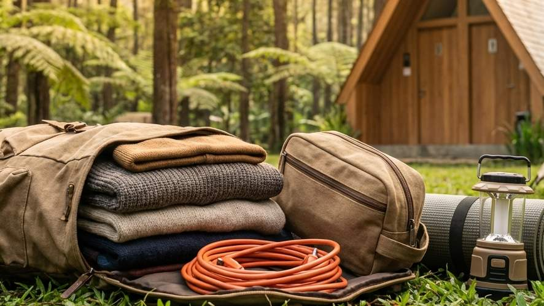

Era pariwisata ekologis saat ini telah mengubah total definisi dari berlibur di alam bebas. Berkemah tidak lagi dipandang sebagai kegiatan survival murni yang menyiksa fisik maupun mental, melainkan telah bertransformasi menjadi sarana healing dan rekreasi keluarga yang amat sangat nyaman (dikenal sebagai comfort camping). Lompatan inovasi terbesar yang kini dihadirkan oleh pengelola perkemahan di dataran tinggi Kota Batu adalah tersedianya fasilitas sanitasi (MCK) yang setara dengan hotel serta pemasangan panel stop kontak kelistrikan langsung di titik-titik lokasi berdirinya tenda tamu.
Bagi Anda yang merencanakan liburan, mencari informasi mengenai Daftar Barang yang Perlu Dibawa ke Area Kemah Batu dengan Colokan Listrik dan Toilet Bersih adalah sebuah langkah taktis yang teramat sangat cerdas. Menyadari bahwa lokasi kemah tujuan Anda difasilitasi dengan pasokan listrik dan sarana kebersihan yang memadai akan secara drastis mengubah manajemen logistik atau daftar barang bawaan (packing list) Anda dari rumah. Anda dapat membawa barang-barang penunjang kenyamanan yang sebelumnya dirasa mustahil untuk digunakan di alam liar. Sebaliknya, kurangnya pengetahuan justru dapat membuat Anda menenteng beban yang tidak perlu, atau bahkan membawa perangkat yang dapat membahayakan keselamatan sistem kelistrikan di area tersebut. Artikel komprehensif ini akan menguliti secara tajam apa saja yang wajib masuk ke dalam koper liburan Anda.
1. Pentingnya Menyesuaikan Barang Bawaan dengan Fasilitas Modern
Membawa barang yang berlebihan (*overpacking*) akan merusak esensi liburan Anda karena Anda akan kelelahan saat melakukan proses bongkar-muat (*loading*) di area parkir. Sebaliknya, membawa barang yang kurang (*underpacking*) di daerah bersuhu sedingin Batu Malang bisa berujung pada penderitaan fisik semalaman. Dengan menyadari bahwa ground camping pilihan Anda telah dilengkapi fasilitas listrik 24 jam dan toilet bilas yang representatif, Anda bisa mencoret jerigen air raksasa dan powerbank berbobot berat dari daftar bawaan, dan menggantinya dengan perangkat yang lebih fungsional.
2. Kategori Elektronik: Memaksimalkan Fasilitas Colokan Listrik
Fasilitas listrik di alam terbuka adalah anugerah terbesar bagi kaum urban. Inilah barang elektronik yang wajib Anda bawa untuk memanfaatkannya dengan aman.
Kabel Rol (Extension Cord) Anti Air Berstandar SNI
Ini adalah peranti paling esensial yang menduduki peringkat pertama dalam daftar Anda. Umumnya, pengelola tempat kemah memasang kotak steker listrik utama di sebuah tiang luar demi menghindari risiko korsleting apabila bagian dalam tenda tergenang atau basah. Oleh karena itu, bawalah kabel olor atau rol (extension cord) dengan panjang kabel antara 3 hingga 5 meter. Pastikan kabel olor tersebut memiliki label SNI, berpelindung kuningan tebal, dan jika memungkinkan berdesain *outdoor* (tahan cipratan air). Tariklah kabel tersebut perlahan masuk ke teras (vestibule) tenda Anda agar bagian stop kontaknya tidak terpapar embun malam atau rintik hujan.
Pompa Udara Elektrik dan Lampu Tenda Hias
Jika Anda memutuskan untuk tidur di atas kasur angin (inflatable air mattress) yang dibawa dari rumah, memompanya secara manual menggunakan injakan kaki tentu akan sangat menguras keringat Anda. Kehadiran colokan listrik memungkinkan Anda untuk membawa pompa angin elektrik mini; kasur Anda akan mengembang sempurna secara otomatis dalam hitungan menit. Selain itu, maksimalkan estetika tenda dengan mengemas lampu hias gantung (string lights / tumblr lights) berwarna kuning hangat (warm white). Cahaya kuning ini tidak hanya menerangi teras Anda, tetapi akan menciptakan vibe yang luar biasa syahdu untuk berfoto ria.
Gadget Hiburan dan Dokumentasi Tanpa Batas
Kehadiran listrik menepis segala kekhawatiran komunikasi dan dokumentasi yang terputus. Anda bisa dengan tenang membawa dan mengisi daya kamera *mirrorless*, drone, atau sekadar ponsel pintar untuk merekam video time-lapse sunrise dalam durasi panjang. Bagi yang membawa anak-anak, membawa tablet kecil atau kipas angin mini (portable fan) colok juga bisa menjadi penyelamat saat mereka mulai merasa bosan atau kepanasan di siang hari.
BACA JUGA (Fasilitas Kelistrikan):
3. Kategori Perlengkapan Mandi: Menikmati Fasilitas Toilet Bersih
Karena Anda sudah memastikan lokasi memiliki toilet permanen dengan kloset duduk (*flushing*) dan pasokan air berlimpah (bahkan dilengkapi *water heater*), tata cara Anda mengemas alat mandi (*toiletries*) juga ikut berubah menjadi lebih ringkas.
Pakaian Dalam Ganti dan Handuk Microfiber Cepat Kering
Anda tidak perlu lagi mandi "koboi" atau sekadar mengelap badan menggunakan tisu basah. Bawalah pakaian dalam ganti yang cukup. Untuk urusan mengeringkan badan, hindari membawa handuk katun rumahan yang tebal dan memakan banyak ruang di tas. Ganti dengan handuk microfiber; selain menyerap air dengan amat cepat, handuk ini juga sangat ringan, tipis saat dilipat, dan mengering dalam waktu singkat jika dijemur di depan tenda.
Toiletries Pribadi (Sabun Ramah Lingkungan)
Siapkan tas kecil khusus (toiletry pouch) yang berisi sabun cair, sampo saset, sikat gigi, dan pasta gigi. Akan sangat bijak jika Anda mulai beralih menggunakan sabun yang diklaim ramah lingkungan (biodegradable) agar limbah sisa mandi Anda tidak mencemari kualitas tanah dan ekosistem di resapan area perkemahan.
4. Kategori Pakaian: Melawan Ekstremnya Suhu Dingin Batu Malang
Kesalahan fatal yang paling sering dilakukan oleh wisatawan pemula di pegunungan adalah salah mengemas (packing) jenis pakaian. Suhu malam di Kota Batu bisa menyentuh angka 14 derajat Celcius di puncak musim kemarau.
Sistem Pakaian Berlapis (3-Layering System)
Tinggalkan kemeja berbahan serat katun murni atau celana jeans tebal jika Anda tidak ingin menggigil sepanjang malam. Terapkanlah konsep 3-Layering System secara mutlak. Pakaian yang menempel langsung ke kulit (Base Layer) wajib menggunakan material serat polyester (seperti baju olahraga *dry-fit*) agar sisa keringat bisa menguap amat cepat. Kemudian, bungkus tubuh Anda dengan lapisan tengah (Mid Layer) yang berfungsi sebagai insulasi penahan panas, misalnya jaket berbahan kain fleece (polar). Sebagai tameng terluar, kenakan jaket windbreaker atau parasut tebal untuk memblokir laju angin malam yang menusuk tulang.
Perlindungan Ekstremitas Tubuh Wajib Ada
Ujung-ujung tubuh adalah bagian pertama yang akan kehilangan panas dan mati rasa. Pastikan Anda telah memasukkan penutup kepala atau kupluk rajut (beanie hat) agar daun telinga tidak beku, minimal dua pasang kaus kaki tebal (wajib dikenakan saat hendak tidur di dalam tenda), dan sarung tangan kain ke dalam ransel Anda.

Persiapan pakaian yang benar akan menyempurnakan kualitas tidur Anda di dalam tenda bertipe double layer yang tebal dan nyaman. (Dokumentasi: Batu Sunrise Camp)5. Kategori Perlengkapan Tidur (Sleep System)
Sistem kelistrikan dan pakaian yang tebal tidak akan menjamin tidur nyenyak jika alas Anda bermasalah. Jangan pernah membiarkan punggung bersentuhan dengan lantai tenda yang hanya berlapis terpal tipis.
Matras Isolator dan Kasur Angin
Bawalah matras berbahan aluminium foil untuk Anda gelar sebagai lapisan dasar (base); bahan ini bertugas memantulkan hawa dingin dari permukaan tanah kembali ke bawah. Barulah di atas lapisan foil tersebut, Anda bisa meletakkan matras spons karet, matras lipat, atau kasur udara portabel.
Sleeping Bag Berbahan Polar
Selimut tidur rumahan tidak didesain untuk menahan hembusan angin gunung. Masukkan Sleeping Bag berdesain mummy (mengerucut ke bagian ujung kaki) ke dalam daftar bawaan. Pilihlah kantong tidur yang memiliki lapisan dalam berbahan dacron tebal atau kain polar lembut yang ahli mengunci hawa panas yang dipancarkan oleh tubuh.
6. Kategori Dapur Lapangan dan Konsumsi Ringan
Meskipun Anda berada di area dengan stop kontak yang melimpah, ada satu aturan krusial tentang memasak yang DILARANG KERAS untuk dilanggar.
Kompor Gas Portabel (Bukan Alat Masak Listrik!)
Jangan pernah mencoba membawa kompor induksi listrik, wajan listrik, atau penanak nasi (rice cooker) bertenaga watt besar! Menyalakan peralatan pemanas berdaya ribuan watt akan secara instan menyebabkan sekring MCB di seluruh area perkemahan anjlok (mati total) dan merugikan tamu di puluhan tenda lainnya. Tetaplah pada prinsip kegiatan outdoor yang etis: bawalah kompor gas portabel lipat yang menggunakan bahan bakar tabung gas kaleng mini (butane/hi-cook). Jangan lupa menyertakan windshield (pelindung angin aluminium) agar nyala api kompor gas Anda tidak terus-menerus tersapu angin.
BACA JUGA (Destinasi & Persiapan):
7. Kategori P3K dan Obat-obatan Pribadi
Keselamatan tetap harus diprioritaskan. Meski dekat dengan area parkir, lokasi perkemahan di Batu biasanya berjarak cukup jauh dari apotek yang buka 24 jam. Siapkan tas kecil khusus (First Aid Kit) yang berisi: plester luka, obat antiseptik cair, minyak kayu putih botol besar (untuk menghangatkan perut balita), obat pereda sakit kepala (paracetamol), obat anti-mual untuk mengatasi mabuk perjalanan darat, serta obat-obatan pribadi bagi anggota keluarga yang memiliki riwayat penyakit khusus (seperti inhaler asma).
8. Rekomendasi Spot: Batu Sunrise Camp
Jika dari semua penjelasan panjang daftar Daftar Barang yang Perlu Dibawa ke Area Kemah Batu dengan Colokan Listrik dan Toilet Bersih di atas masih terasa terlalu memberatkan bagi anggaran pengeluaran atau kapasitas bagasi mobil Anda, ada satu jalan pintas terbaik: Menyewa layanan paket All-In di Batu Sunrise Camp.
Di spot eksklusif ini, Anda bisa melupakan keharusan membeli tenda tebal, matras, atau sleeping bag. Pihak pengelola telah menyediakan dan mendirikan itu semua di lokasi sebelum Anda tiba. Titik colokan listrik ditarik secara profesional dengan aman di sekitar tenda, sementara fasilitas toilet duduk yang disikat kinclong selalu siaga 24 jam. Anda dan keluarga benar-benar hanya dituntut untuk membawa pakaian ganti, colokan *charger*, dan bahan makanan kesukaan untuk dipanggang saat malam tiba.
9. Kesimpulan
Pariwisata ekologis berbasis alam terbuka tidak lagi identik dengan kerepotan yang mengerikan. Dengan menyesuaikan barang bawaan dengan ketersediaan fasilitas modern, Anda bisa menghemat banyak tenaga. Kunci dari persiapan yang sukses adalah membawa kabel olor (*extension*) untuk memaksimalkan listrik, membawa perlengkapan mandi praktis, menyortir pakaian berdasarkan prinsip *3-layering* penahan dingin, serta tidak membebani sirkuit listrik area dengan kompor berdaya ribuan watt. Jika Anda ingin mereduksi beban *packing* Anda hingga 80%, menyerahkan urusan logistik tidur kepada pengelola tepercaya seperti Batu Sunrise Camp adalah sebuah investasi liburan yang luar biasa cerdas dan efisien. Kemaslah ransel Anda, karena liburan Comfort Camping yang memanjakan sudah menanti!